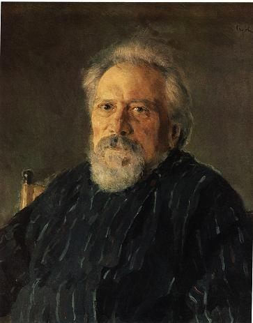

Nikolai Leskov
CHÚNG tôi đáp tầu thuỷ trên hồ La-đô-ga từ đảo Cô-nê-xep đến đảo Va-lam. Dọc đường, tầu ghé vào bến Cô-rê-li. Nhiều hành khách tò mò muốn lên bờ xem phong cảnh và họ thuê những con ngựa Phần Lan to lớn để đi vào thị trấn hoang vắng này. Khi viên thuyền trưởng đã giải quyết xong công việc, hành khách chúng tôi lại xuống tàu đi tiếp.
Sau khi quan sát thị trấn Cô-rê-li, tất nhiên câu chuyện giữa chúng tôi chuyển sang việc bình phẩm về cái thị trấn nghèo nàn, mặc dù rất Nga và rất cổ kính này. Khó tìm được nơi nào buồn tẻ như ở đây. Tất thảy hành khách trên tầu đều tán thành nhận xét ấy, và một vị thuộc loại người thích khái quát triết học và giễu cợt chính trị đã thốt lên rằng, có một điều ông ta không hiểu được: tại sao ở kinh đô Pê-téc-xbua người ta lại phải đầy những kẻ mà họ không ưa đi tận những nơi xa lắc, gây tốn phí bao nhiêu cho kho bạc nhà nước, trong khi ngay gần kinh đô có sẵn một nơi tuyệt vời là Cô-rê-li trên bờ hồ La-đô-ga. Kẻ nào phải giam hãm ở nơi này thì dù đầu óc tự do và chống đối đến mấy, cuối cùng cũng tiêu tan những tư tưởng ấy giữa khung cảnh lãnh đạm của dân chúng và sự cằn cỗi hoang vu của thiên nhiên vùng này.
- Tôi tin rằng, - người khách kia nói. - Căn nguyên của cách đầy ải tốn phí kia dứt khoát chỉ là do họ lười suy nghĩ, hoặc ít nhất cũng do họ thiếu những thông tin thích hợp.
Một người hay qua lại vùng này đối đáp rằng, thỉnh thoảng cũng có những phạm nhân bị đầy ra đây nhưng hình như họ đều không chịu đựng nổi nơi này.
- Một thầy dòng trẻ tuổi phạm tội hỗn xược với cấp trên (loại tội này không sao hiểu nổi). Lúc mới ra đây, y hăng hái lắm, tin tưởng rằng sẽ thích ứng được với khung cảnh này. Nhưng chỉ ít ngày sau, y bắt đầu uống rượu, uống nhiều đến phát điên rồi gửi đơn thỉnh cầu lên cấp chính quyền, xin được "xử bắn hay đăng vào lính, bởi vì y không đủ gan tự treo cổ".
- Thế cấp trên trả lời ra sao?
- Hừm... quả thật tôi cũng không rõ. Chỉ có điều anh chàng thấy buồn quá, không đủ sức chờ quyết định của cấp trên, đã tự nguyện treo cổ trước.
- Mà y làm như thế là đúng, - vị triết gia phát biểu.
- Đúng ấy à? - Người thuật chuyện hỏi lại. Ông ta có vẻ một thương gia, tính nết xem chừng đứng đắn, ngoan đạo.
- Chứ còn gì nữa? Y đã chết và thế là xong.
- Xong thế nào được? Sang đến thế giới bên kia y sẽ ra sao? Những kẻ tự tử sẽ vĩnh viễn phải chịu đau đớn. Không ai cầu nguyện cho linh hồn họ hết.
Vị triết gia mỉm cười mỉa mai, nhưng không cãi thêm câu nào. Tuy thế một hành khách tham gia vào cuộc tranh luận, bác bỏ ý kiến vị triết gia và cả ý kiến vị thương gia, đột ngột lên tiếng bênh vực anh chàng thầy dòng kia đã xử tử bản thân trước khi được cấp trên cho phép.
Đấy là vị khách xuống tầu từ bến Cô-nê-vét mà chúng tôi không ai chú ý đến. Từ lúc xuống, bác ta không nói năng gì và chúng tôi cũng không ai ngó ngàng đến bác. Nhưng bây giờ thì mọi cặp mắt đều hướng vào bác ta, hình như ai cũng ngạc nhiên sao không để ý đến con người này từ trước nhỉ. Bác có dáng người cao lớn, bộ mặt rám nắng, cởi mở và một mái tóc dầy, lượn sóng mầu tro với những ánh lấp lánh mầu chì rất lạ. Bác mặc áo chùng dài kiểu thày dòng tập sự, thắt lưng da to bản kiểu của tu viện và mũ vải cao mầu đen nhọn hoắt. Không rõ bác ta là tập sự hay đã là thày dòng chính thức, bởi vì những thầy tu vùng hồ La-đô-ga này, quen xuề xòa kiểu thôn dã, thường đội mũ vải tập sự, không chỉ lúc đi đường mà cả trong khi làm việc ở tu viện trên các đảo. Bác hành khách mới mẻ này, sau đây sẽ tỏ ra là một con người rất lý thú. Bác chừng ngoài năm chục tuổi, nhưng thân hình vạm vỡ, hệt như một hiệp sĩ trong các truyện cổ tích Nga, chất phác và phúc hậu, trông rất giống già I-li-a Mu-rô-mét trong bức hoạ nổi tiếng của Vê-rê-sa-ghin và trong tập trường ca của A-léc-xây Côn-xtan-ti-nô-vích Tôn-xtôi. Mặc áo thầy tu chẳng hợp với dáng người bác chút nào. Đúng ra bác phải xỏ đôi dép bện to tướng, cưỡi lên lưng con ngựa bạch, phi trên những cánh rừng, thở hít "mùi nhựa thông và mùi quả dâu rừng phảng phất trong rặng thông âm u”.
Tuy vẻ mặt hiền hậu chất phác, bác vẫn lộ rõ là một con người cực kỳ từng trải, đã 'nhìn thấy mọi thứ”. Thái độ bác bạo dạn tự tin, mà lại không hề có vẻ khinh đời chút nào. Giọng bác nói trầm, hơi du dương và chậm rãi.
- Không phải như thế đâu, - bác buông ra từng chữ một cách uể oải, dưới hàng ria mép rậm rì và hoa râm, quăn tít lên theo kiểu ria lính đầu rồng. - Điều ông vừa bảo, là những người tự tử sẽ vĩnh viễn không bao giờ được tha thứ, tôi không tán thành. Và nói không ai cầu nguyện cho họ tôi cũng không chịu, bởi vì có một người thu xếp được một cách cực kỳ đơn giản hoàn cảnh của họ.
Mọi người bèn hỏi bác, ai là người quan tâm đến những kẻ tự sát và tìm cách an ủi linh hồn của họ ở thế giới bên kia.
- Tôi sẽ nói ai, - vị hiệp sĩ dũng mãnh trong bộ áo tu sĩ kia đáp. - Trong một làng thuộc giáo phận Mát-xcơ-va, có một linh mục nhỏ bé uống rượu đến mức suýt bị tống cổ ra khỏi nhà thờ, chính vị ấy thường xuyên chăm lo đến linh hồn của những người tự sát.
- Sao bác biết?
- Khắp giáo phận Mát-xcơ-va ai cũng biết chuyện này vì sự việc đã lên tới đức Tổng giám mục Phi-la-ret.
Lát sau, một hành khách ngỏ ý không tin. Bác thầy dòng kia không hề tự ái, nói tiếp:
- Mới nghe thì đúng là khó thật. Chẳng có gì lạ, bởi vì ngay đến đức Tổng giám mục lúc đầu cũng có tin đâu, mãi tới khi ngài thấy những chứng cớ hiển nhiên ngài mới tin.
Mọi người giục bác thầy dòng kể câu chuyện kỳ lạ ấy và bác vui vẻ nhận lời:
- Tôi nghe kể thế này. Một hôm đức Giám mục địa phận trình lên ngài Tổng giám mục về một linh mục suốt ngày say rượu và làm mang tiếng cho cả xứ đạo. Mà sự thật đúng là như thế. Ngài Tổng giám mục bèn cho đòi ông linh mục kia lên Mát-xcơ-va để ngài hỏi. Ngài thấy rõ đúng ông ta nghiện ngập thật và quyết định sẽ đuổi ông linh mục kia ra khỏi nhà thờ. Ông này buồn quá, bỏ cả rượu, suốt này chỉ rên rỉ, than vãn: "Nông nỗi này thì ta chỉ còn mỗi một cách là chết đi thôi. Khi đó ngài Tổng giám mục sẽ thương vợ con ta nghèo khổ, sẽ kiếm một thằng chồng cho con gái của ta để nó thay ta nuôi nấng cả gia đình!". Ông ta quyết định như thế, thậm chí còn ấn định cả ngày nào sẽ thực hiện. Thế nhưng rồi ông ta lại băn khoăn: "Ta chết thì được thôi. Nhưng ta đâu phải súc vật, ta có linh hồn, vậy cái linh hồn ấy sẽ đi đâu?" Và ông ta lại càng sầu não hơn. Mặc, ông ta sầu não đến mấy là việc của ông ta, còn ngài Tổng giám mục đã quyết định rồi, không cho ông linh mục kia được thờ Chúa nữa. Một hôm ngài ăn xong, nằm xuống đi-văng, cầm cuốn sách đọc rồi ngủ thiếp đi. Cũng không rõ ngài ngủ thật hay chỉ mơ màng, nhưng đột nhiên ngài nhìn thấy cửa phòng mở ra. Ngài bèn hỏi: "Ai thế?". Bởi ngài nghĩ, chắc chị người làm hay ai vào trình gì với ngài. Nhưng không phải chị người làm mà là một ông già cực kỳ phúc hậu bước vào. Ngài Tổng giám mục nhận ra đấy chính là đức thánh Xéc-ghi.
Ngài Tổng giám mục bèn hỏi:
- Thưa, đức Thánh tối thiêng Xéc-ghi phải không ạ?
Đức Thánh đáp:
- Chính là ta, hỡi tên nô lệ của Chúa là Phi-la-ret.
Ngài Tổng giám mục lại hỏi.
- Đức Thánh tối thiêng cần gì ở đứa con tội lỗi này ạ?
Thánh Xéc-ghi đáp.
- Ta muốn xin con một điều.
- Đức Thánh tối thiêng cần xin cho kẻ nào vậy?
Đức Thánh nói tên ông linh mục vì nghiện rượu mà bị đuổi, rồi biến mất. Ngài Tổng giám mục sực tỉnh giấc và ngài suy nghĩ: "Vừa rồi là sự thật hay chiêm bao? Là mơ tưởng hay thánh linh báo mộng thật?" Ngài suy nghĩ mãi và cuối cùng kết luận rằng đấy chỉ là giấc chiêm bao bình thường, bởi vì đức Thánh Xéc-ghi vốn là người đạo đức cao siêu, đời nào lại xin tha thứ cho một kẻ thờ Chúa mà rượu chè đến mức làm ô danh Giáo hội. Nghĩ thế xong ngài Tổng giám mục quyết định không thay đổi gì hết, vẫn để bản án tiếp tục được thi hành. Sau đó Ngài nằm xuống và ngủ giấc buổi trưa như thường lệ. Nhưng vừa chợp mắt ngài lại chiêm bao, và lần này ngài vô cùng bối rối, bởi vì cảnh tượng ngài nhìn thấy rất kỳ quái... Tiếng vó ngựa vang ầm... không biết bao nhiêu hiệp sĩ mặc toàn mầu xanh lục, từ chân đến đầu, trên lưng những con ngựa ô vạm vỡ và hung hãn như đàn sư tử, dẫn đầu một vị tướng lẫm liệt, cũng mặc đồ xanh, tay trỏ đường, tay vung một lá cờ mầu sẫm có hình một con rắn. Ngài Tổng giám mục chưa hiểu đoàn người kia là gì, bỗng nghe thấy vị tướng ra lệnh: "Các ngươi hãy hành hạ chúng bởi vì bây giờ chúng không còn ai cầu nguyện cho nữa". Nói xong vị tướng phi lên trước và cả đoàn hiệp sĩ phi ngựa theo. Phía sau họ là một đám lũ lượt những bóng người mờ ảo, còm cõi giống như những con ngỗng về mùa xuân. Đám hình bóng mờ ảo này rên rỉ, khóc lóc, nước mắt đầm đìa van xin ngài Tổng giám mục. Họ chìa những cánh tay thảm hại: "Ngài hãy tha cho ông linh mục, chỉ có mỗi ông ấy còn cầu nguyện cho chúng tôi." Vừa thức dậy, ngài Tổng giám mục cho người gọi ông linh mục khốn khổ kia đến và hỏi ông thường ngày vẫn cầu nguyện cho những ai. Ông linh mục chưa hiểu chuyện gì, rất hoảng sợ: "Thưa đức cha Tổng giám mục, theo đúng mọi nghi thức của Nhà thờ". Phải vất vả lắm ngài Tổng giám mục mới buộc được ông ta thú nhận: "Thưa cha Tổng giám mục, con chỉ phạm một khuyết điểm duy nhất, là vốn hèn yếu, mỗi khi gặp chuyện quá đau khổ con lại nghĩ đến chuyện tự sát, cho nên con thường thông cảm với những kẻ tự sát và vẫn cầu nguyện cho linh hồn của họ...". Thế là ngài Tổng giám mục hiểu ngay, những bóng ma như những con ngỗng gầy còm kia là ai và ngài không muốn để mặc cho những tên quỷ tha hồ hành hạ họ. Ngài bèn ban phước cho ông linh mục nhỏ bé và phán truyền: "Ngươi chừa rượu đi và hãy tiếp tục cầu nguyện cho họ." Rồi ngài phục hồi chức vị cho ông linh mục. Cho nên hiện vẫn có một người quan tâm đến những kẻ do không chịu đựng nổi kiếp sống đã trốn khỏi cõi đời. Ông linh mục kia đến nay vẫn không chịu từ bỏ thiên chức của mình và vẫn không ngừng làm theo đúng lời dạy của chúa. Bởi vì Chúa buộc phải tha thứ cho những kẻ thiếu nghị lực sống ấy.
- Tại sao Chúa lại "buộc phải" tha thứ?
- Bởi vì chính miệng Chúa đã phán bảo: "Ngươi hãy gõ thì khắc người ta sẽ phải mở cửa". Chúa bao giờ cũng xử sự như vậy.
- Thế ngoài cái ông linh mục ở giáo phận Mát-xcơ-va bác biết có ai cầu nguyện cho những kẻ tự sát nữa không?
- Không. Với lại cũng khó có thể bênh vực những kẻ tự sát bởi vì họ dám cưỡng lại ý Chúa. Nhưng tôi biết một số người vẫn cầu nguyện cho họ mà không biết. Vào dịp lễ Ba ngôi chẳng hạn, mọi người đều cầu nguyện cho họ, tôi tin là như thế. Vào dịp ấy mọi người đều đọc những bài kinh rất xúc động, khiến tôi nghe không chán tai.
- Những bài kinh ấy không đọc vào những ngày khác được ư?
- Tôi không rõ. Việc ấy phải hỏi ai thông hiểu. Còn tôi thì việc không liên quan đến tôi, tôi không tìm hỏi làm gì.
- Bác có thấy trong lúc làm lễ, những bài cầu nguyện ấy được lặp lại vài lần chứ?
- Không, tôi không nhận thấy, bởi vì tôi cũng rất ít khi ngồi dự lễ.
- Tại sao vậy?
- Vì công việc của tôi không cho phép.
- Bác là linh mục hay là thầy dòng?
- Không, tôi chỉ mới tập sự.
- Nhưng dù sao bác cũng là thầy dòng rồi chứ?
- Vâng... cũng đại loại là như thế.
- Ấy nhưng nếu tập sự thì vẫn có thể bị gọi vào lính được, - vị khách thương gia nói châm vào.
Bác có dáng người cao lực lưỡng không hề mếch lòng. Suy nghĩ một lát, bác nói:
- Đúng thế. Cũng đã có nhiều trường hợp như thế. Nhưng tuổi tôi cao quá rồi. Năm nay tôi năm mươi ba. Với lại làm lính đối với tôi cũng chẳng là chuyện gì mới mẻ.
- Bác đã từng phục vụ trong quân ngũ.
- Đúng thế.
- Bác là hạ sĩ hay là gì? - Vị khách thương gia lại nói.
- Không đâu.
- Bác là binh sĩ, là hậu cần hay là thầy dòng trong quân đội?
- Cả mấy thứ đó đều không phải. Tuy vậy tôi là người thực sự của quân đội, tôi liên quan đến trung đoàn từ khi tôi còn bé.
- Bác là thiếu sinh quân chứ gì? - Người thương gia bực bội hỏi.
- Cũng không phải.
- Bác là cái gì vậy?
- Là chuyên dụng.
- Nghĩa là cái gì?
- Hay gọi là thợ ngựa, tức là thông thạo về ngựa, để giúp đỡ các sĩ quan hậu cần trong các đơn vị ky binh, góp ý kiến với các vị ấy.
- Ra thế.
- Tôi đã từng lựa chọn và huấn luyện hàng ngàn con. Tôi cũng đã trị được những con ngựa dữ, chuyên hất ngã người cưỡi, thậm chí làm thủng bụng họ bằng cái mấu sắt ở bàn đạp của chúng. Nhưng với tôi thì chúng không dở được trò gì hết.
- Bác làm cách nào?
- Đơn giản lắm. Chẳng là tôi có được một cái tài trời phú cho. Vừa nhảy lên lưng ngựa, tôi đã lập tức trấn áp ngay, không có nó kịp định thần để đối phó. Tay trái tôi nắm tai nó kéo lên thật nhanh. Tay phải, tôi đập liên hồi lên giữa đỉnh đầu nó. Tôi lại nghiến răng tạo thành một tiếng ken két rùng rợn. Con vật tưởng như đến phọt óc ra hai lỗ mũi cùng với máu của nó. Và thế là nó trở nên hiền như bụt ngay.
- Rồi sau đấy?
- Sau đấy tôi nhảy xuống đất, vuốt ve an ủi nó, tôi đứng ngay trước mắt nó, bắt nó phải nhìn kỹ vào mặt tôi để nhớ đời. Rồi tôi lại nhảy lên lưng nó và bắt nó chạy.
- Mỗi lần làm như thế thì ngựa hết dữ à?
- Đã đành. Vì ngựa là giống thông minh. Nó hiểu được người cưỡi nó là ai và coi khinh nó đến mức nào. Do dùng cách đó bất cứ con ngựa nào cũng yêu tôi và rất hiểu tôi. Ở Mát-xcơ-va tại sân quần ngựa có một con quái quỷ. Nó cưỡng lại bất cứ ai cưỡi lên lưng nó. Cái con ngựa khốn kiếp ấy lại thêm một trò tai quái là cắn vào đầu gối người ta. Nó chỉ ngoạm vào một cái là xương tròn ở đầu gối của anh bay đâu mất. Nó đã làm tàn tật không biết bao nhiêu người. Lão người Anh tên là Ra-rây, nổi tiếng là tay trị ngựa giỏi, lúc ấy có mặt ở Mát-xcơ-va cũng suýt bị nó ngoạm mất xương đầu gối. Lão ta thoát được nhưng cũng bị con ngựa làm cho mất hẳn uy thế. Chẳng là lão có một cái đầu gối cứng như thép. Con ngựa ngoạm không được đành hất lão ngã chỏng gọng xuống đất. May là lão không chết. Đến lượt tôi thì tôi đưa nó vào khuôn phép được ngay.
- Bằng cách nào?
- Tôi đã nói với các ông rồi, tôi may mắn có một cái tài do Trời phú cho. Lão người Anh Ra-rây và những người khác chỉ dùng có dây cương để buộc ngựa phải quay sang trái hay sang phải, nhưng tôi dùng biện pháp khác hẳn. Khi thấy lão người Anh chịu thua con ngựa rồi, tôi bèn bảo: "Con ngựa này bị ma ám đấy mà. Ông người Anh không hiểu được điều đó, nhưng tôi hiểu. Và tôi có cách chữa". Ông giám đốc bằng lòng. Tôi bèn bảo: "Các ông hãy dắt con ngựa ra ngoài cổng Đrô-gô-mi-lôp-xca!". Thế là người ta dắt nó ra chỗ thung lũng gần làng Phi-li, nơi giới thượng lưu xây rất nhiều biệt thự để nghỉ mùa hè. Thấy nơi này thoáng đãng, thuận lợi thế là tôi bắt tay vào hành động. Tôi nhảy lên lưng con khốn nạn, chỉ mặc mỗi chiếc quần ngắn, hai chân không giầy dép và đội chiếc mũ lưỡi trai cùng dải kim tuyến của vương công Vơ-xê-vô-lôt Ga-vrin nổi tiếng xứ Nôp-gô-rôt, người mà tôi rất kính phục về lòng dũng cảm và rất tin cậy, trên dải có thêu dòng chữ "Ta không cho kẻ nào được phép đụng đến danh dự của ta". Tôi không mang gì ngoài một cái roi kiểu của dân Tác-ta đầu gắn một quả gang nặng chừng hai pút trên tay phải, và tay trái cầm một cái niêu đựng đầy một thứ hồ lỏng. Khi tôi ngồi lên lưng nó, bốn người khác kéo căng dây cương về các phía để nó không thể cắn ai được. Khi thấy chúng tôi bắt đầu trị nó, con ngựa khốn kiếp hét inh lên, giậm chân, thở phì phì tức giận, như muốn xé xác tôi ra. Thấy vậy, tôi bèn ra lệnh cho mấy cậu giám mã thả cương ra rất nhanh. Mấy cậu sửng sốt, mở to mắt. Tôi bèn quát: "Các anh điếc cả ư? Còn chờ gì mà không làm theo lệnh tôi?". Bọn chúng trả lời: "Thưa ông Phli-a-ghin, không thể làm theo lệnh ông được ạ!" Thấy vậy tôi bèn quặp chặt hai đùi vào bụng con ngựa, tôi thấy rõ nó đang rãy rụa. Rồi tôi hét "thả cương ra!". Trong lúc bọn chúng chưa biết trả lời ra sao thì tôi liền nghiến răng trợn mắt lên khủng khiếp. Chúng kinh hãi vội thi hành ngay, thả cương rồi chạy tán loạn. Đúng lúc ấy tôi đập cái niêu lên giữa đỉnh đầu con ngựa. Thế là bột lỏng chảy xuống chui vào cả mắt, bịt kín cả hai lỗ mũi con vật khiến nó hoảng hốt: "Thế nghĩa là sao nhỉ?" Tôi lấy mũ lưỡi trai đẩy thêm bột lỏng cho chui vào mắt nó nữa, đồng thời quất một roi vào sườn nó... Hôp! Nó chồm lên, nhưng tôi vẫn tiếp tục nhét thêm bột lỏng vào mắt nó cho nó mù hoàn toàn, đồng thời vẫn không ngừng quất roi vào sườn. Không để nó kịp nghỉ, tôi lại đổ thêm bột lỏng lên đầu khiến nó hoàn toàn không nhìn thấy gì nữa. Tôi dọa dẫm bằng cách nghiến răng ken két và quất roi lên hai bên sườn, để nó hiểu rằng đây không phải trò đùa. Bây giờ thì nó hiểu ra, thôi không giậm chân nữa, bắt đầu lao chạy về phía trước. Nó chạy nước kiệu như một kẻ trọng tội. Nó càng chạy tôi càng quất, cho đến khi cả nó lẫn tôi đều mệt nhoài. Hai vai tôi nhức nhối. Hai cánh tay tê cứng lại. Còn nó thì không động đậy, chỉ lè lưỡi. Khi tôi thấy nó đã chịu, tôi bèn nhảy xuống đất, lau mắt cho nó rồi nắm lấy bờm: "Đứng yên, đồ chết giẫm!" Tôi kéo cho nó quỳ xuống. Từ ngày ấy nó trở nên ngoan ngoãn như chú cừu, bảo gì cũng nghe. Nó chịu để cho người ta cưỡi. Nhưng chỉ ít lâu sau nó chết.
- Thật à?
- Đúng thế. Con ngựa ấy quá nhiều kiêu ngạo. Nó tuy chịu nhưng không thay đổi được bản tính. Còn lão Ra-rây thì sau khi nghe chuyện của tôi, đã mời tôi vào làm cho lão ta.
- Thế bác có làm cho ông ta chứ?
- Không.
- Tại sao?
- Biết nói thế nào được nhỉ? Thứ nhất tôi là thợ ngựa, nghĩa là giỏi chọn ngựa hơn là dạy ngụa, trong khi lão ta lại cần người dạy thú dữ. Hai nữa, tôi ngờ lão ta mời tôi vào làm cho lão để xỏ tôi.
- Xỏ thế nào?
- Lão muốn dò ra bí quyết của tôi.
- Bán cái bí quyết ấy đi lấy tiền cũng được chứ sao?
- Đúng thế.
- Vậy tại sao bác lại từ chối ông ta?
- Chà... cũng có thể lão sợ tôi.
- Nghĩa là lại còn câu chuyện gì nữa à? Bác kể cho nghe được không?
- Đấy không phải một câu chuyện mà chỉ đơn giản là lão bảo tôi: "Anh hãy lộ bí quyết của anh ra với tôi, tôi sẽ trả tiền anh thật hậu và mời anh vào làm công cho tôi". Tính không lừa dối ai bao giờ, tôi bèn bảo lão: "Bí quyết gì đâu kia chứ!". Nhưng lão người Anh là tay trí thức, lão không tin. "Nếu anh không muốn nói bí quyết ra cho tôi biết thì thôi. Cũng được! Ra ngoài kia uống với tôi một ly rượu rom". Thế là sau đấy cả tôi với lão đều say khướt. Lão ta mặt đỏ gay, hỏi tôi bằng thứ tiếng lóng, rằng tôi đã xử trí với con ngựa cách nào. Tôi bèn bảo: "Thế này thôi...". Và tôi trợn mắt nhìn lão, miệng nghiến răng khủng khiếp. Trong tay không có niêu bột lỏng, tôi ra hiệu bằng cách giơ cái cốc làm như định đánh lên đầu lão. Nhìn thấy tôi như thế, lão hoảng quá, chui tọt xuống gầm bàn, tuồn ra cửa rồi chạy mất. Từ hôm ấy tôi không gặp lại lão lần nào nữa.
- Ra vì thế mà bác không vào làm cho ông ta?
- Đúng. Với lại vào làm cái gì khi lão không còn dám gặp lại tôi nữa. Thật ra lúc uống rượu tay đôi với lão tôi đã bắt đầu thấy quý lão và cũng định nhận lời làm công cho lão. Nhưng đúng là con người ta ai cũng có một số phận khiến ta không thể thoát được. Mà số phận tôi cứ có một thiên chức khiến tôi đeo đuổi.
- Thiên chức gì?
- Cũng khó nói ra cụ thể được... Tôi đã trải qua rất nhiều thử thách. Đã từng ngồi trên lưng ngựa và cũng đã từng chui dưới bụng chúng. Tôi đã bị bắt cóc, đã tham gia chiến trận, đã từng giết người và bản thân cũng đã nhận những vết thương mà như kẻ khác thì đã chết rồi.
- Thế bác vào tu viện từ bao giờ?
- Mới cách đây vài năm thôi sau cả một quãng đời dài.
- Đấy cũng là một thiên chức?
- Hừm... Tôi không biết giải thích với các ông thế nào... Tôi nghĩ rằng đấy thì đúng là thiên chức thật…
- Tại sao bác lại hồ nghi như vậy?
- Sao không hồ nghi cho được, khi bản thân tôi đã trải qua bao nhiêu gian nan mà vẫn chưa hiểu được nguyên do của những bước đường ấy.
- Theo bác thì tại sao?
- Có thể là tôi luôn luôn làm trái với ý muốn của bản thân tôi chăng.
- Nghĩa là sao?
- Nguyên do từ một điều trối trăng của mẹ tôi.
- Điều trối trăng ấy đã khiến bác ra sao?
- Khiến tôi luôn gặp đủ thứ gian truân nhưng chưa thể gục xuống được.
- Thật ư?
- Thì tôi đã nói với các ông rồi đấy thôi.
- Bác kể cho bọn tôi nghe cuộc đời của bác đi.
- Nếu các ông đòi nghe thì tôi sẽ kể lại những gì mà tôi còn nhớ được. Nhưng phải kể từ đầu.
- Hay lắm! Câu chuyện sẽ càng hấp dẫn lý thú.
- Chưa biết được. Các ông cứ thử nghe xem.